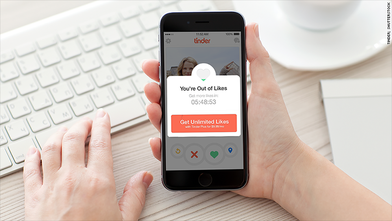
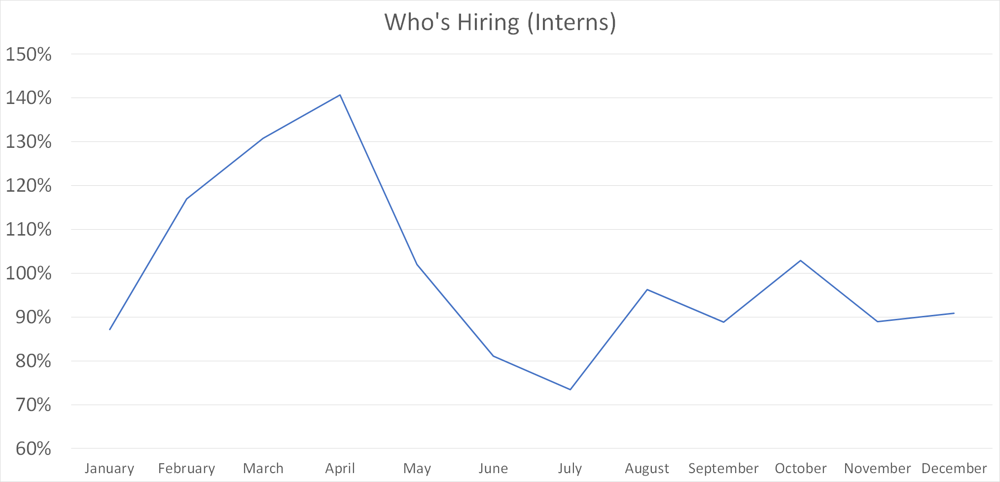
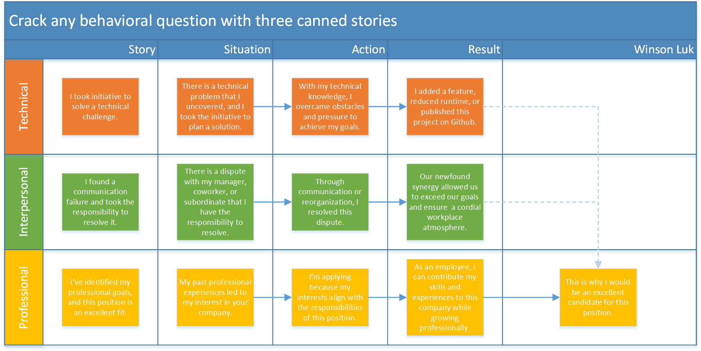

How to get 287 rejections without talking to women
Preface: The Internship Recruiting Timeline
Summer internship openings start opening up in July and close around May. The best time to apply for companies is the day their applications open, which can range from July to April. You'll get a much lower response rate from November to January since the fall cycle will be wrapping up, the spring cycle hasn't started, and everyone's on vacation. I calculated average startup internship openings by month from scraping Hacker News's hiring threads, and it looks like February to May is the prime startup hiring season.
Seasonalized average intern openings scraped from HN's Who's Hiring
You should take at least three months to practice technical questions, one month to set up and perfect your professional profiles (resume, website, LinkedIn, Github, etc.), and one week to practice behavioral questions before applying. You should expect a reply from about 1/3 of your applications within 3 weeks (2/3 of my applications never got a response). Of these replies, over 90% were rejections, and I received a series of 2-4 HackerRank challenges, CoderPad questions, and/or phone interviews from the remaining 10%. My quickest interval from application to offer was 2 weeks, and my longest was 2 months. I was able to do all my interviews remotely from San Diego, with one exception: the CIA "encouraged" me to fly to Washington for their final interview.
How to get an internship
Maximize your PAIN:
1. Professionalize your profile
2. Apply early
3. Interview
4. Negotiate your offer
1. Professionalize your profile

Green squares on an accomplished Github profile
When you apply for a job, you'll want to provide your resume, cover letter, website, Github, and LinkedIn. Your resume should include all the points in Gayle's template, but feel free to spice it up with LaTeX. For my cover letters, I wrote a script that took the name of a company as an input and outputted a unique LaTeX PDF cover letter. You might want to do this to save some time copying and pasting, since you probably don't want to write unique cover letters for every application. For your website, check out a few examples from Hackathon Hackers. You can use a click-and-drag website creator like WordPress/Squarespace/Weebly, or you can write your own HTML and host it on Github or AWS. You'll want your Github to have lots of projects and even more green squares, and your LinkedIn should have the same content as your resume and website.
2. Apply early

EngineerJobs.com, Job Alerts from Google, and LinkedIn Job Alerts
If you buy LinkedIn Premium and look at the number of applications for each opening, you'll see openings that have hundreds or even thousands of applicants for every one spot. My rejection email from Redbooth actually said, "We received an overwhelming number of applications. Due to the sheer volume, our team couldn't get through all of them." You don't want to be the 100th or 1000th applicant; you want to apply the day the application opens. The best way to do this is by setting up email job alerts from sites like Google Jobs (search "[keyword] jobs" on Google and click the widget), LinkedIn, Glassdoor, and EngineerJobs.com (a curated list from Indeed). Use keywords such as "software", "technical", "developer", and "engineer" with "OR" to combine the keywords. Refine by location (your city +- 30 miles) and date posted (within 24 hours), and apply as soon as you receive those daily emails. Avoid popular aggregator sites like Easy Application and Intern.supply; openings posted there will already have hundreds of other applicants by the time you see them. Also, be sure to keep track of your progress in a spreadsheet so you don't apply to the same place twice.
287 rejections (only 8% of my applications landed me an interview)
3. Interview
There are three types of knowledge you need to master for your interview: technical, behavioral, and professional. And there are three types of people you will need to parrot this knowledge to: engineers, recruiters, and managers. You should emphasize your technical knowledge to engineers, behavioral to recruiters, and professional to managers, but prepared for anything. Managers love asking behavioral questions, and I've heard of recruiters asking technical questions.
Technical
I'm not going to write too much about the technical side of interviews since there's plenty of great resources already. Start with PIE if you're a freshman, CTCI if you're a sophomore, or EPI if you're a junior or above. Skiena is a textbook that complements these nicely without being too theoretical. Regardless of level, buy LeetCode Premium and practice the top 100 or more most common interview questions. You may get questions on coding practices and system design, and Code Complete and Designing Data-Intensive Applications are excellent resources. You should also read a reference book on the language you are planning on interviewing in and/or working in. Some languages have must-read books (e.g. The C Programming Language for C or Effective Java for Java), so make sure to read those. John Washam has a great to-do list of topics to study, and /r/cscareerquestions is an active community dedicated to CS interviews and more.
Behavioral
For behavioral questions, look up the STAR interview method; your answers should involve a personal story explained through STAR. Since it's difficult to come up with stories on the spot during an interview, you can get away with preparing a few stories beforehand and tailoring these prepared stories to the actual question. One should involve a technical challenge: you uncovered a technical problem and planned a solution (situation), then you overcame obstacles and pressure to achieve your goals (action), and finally you delivered a successful solution (result). Think of a past project or experience that fits this narrative. Your second story should demonstrate your communication skills: you faced the responsibility to resolve a dispute (situation), communicated with coworkers or superiors to resolve this dispute (action), and enabled a productive working environment (result). This story doesn't need to be from an engineering role. Your third story should be your professional narrative; how your past experiences shaped your future goals (situation), why you decided to apply for this position (action), and why this position aligns with the interests of both the company and yourself (result). Try to connect the conclusion of each story to your qualifications or enthusiasm for the position.
At the minimum, you need one technical, one interpersonal, and one professional story.
With these three stories, you should be able to answer the vast majority of typical behavioral questions. Any question about a situation, action, or result should be answered with an entire story that includes situation, action, and result. It's your job to identify which story adequately answers the question. If a question isn't entirely relevant to any of your prepared stories, learn the Presidential Pivot. I've provided 133 behavioral interview questions for you below. Try to identify which of your stories is appropriate to each question and determine which part of STAR is relevant. If it's not an exact match, how can you pivot the question to provide your strongest story and response? I've done the first 50 for you.
Professional
You need to show enthusiasm for the interview. Look up the company on Glassdoor and your interviewer on LinkedIn. Your best chance to demonstrate that you've done your research is when you ask questions. One question should be related to the company to show that you've done your research ("How did last month's IPO affect...?"). To show that I was engaged during the interview, I also like to ask a question pertaining to a topic that came up during the interview ("You mentioned that..."). If there's still time, this is my favorite question about culture: "What's different about working at [company] than anywhere else you've worked?" Lastly, always send a thank-you email within 24 hours of the interview; some hiring managers actually expect one. My thank-you emails usually go something like this:
Good afternoon [interviewer], Thank you for taking the time to meet with me today. It was a pleasure to learn more about [something about the work] and [something about the culture] at [company]. I really appreciated [mention something about the interview]. [mention something else] especially appeals to me. Our conversation confirmed my strong interest in joining [company] as a [position], and I'm looking forward to hearing back from you soon about the next steps. Regards, [name]
4. Negotiate your offer
Never negotiate an internship offer; you're already a liability for the company, and an extra few hundred bucks isn't worth the chance of losing an opportunity that you can take with you for a lifetime. But if you have a full-time offer, negotiating will be worth six figures, so you should probably keep reading. Start by estimating your current level from Levels.fyi and aim for a 10%+ increase in total compensation from where you are now. If you want, you can get a better estimate of your salary potential by asking anonymously on Blind. Glassdoor and /r/cscareerquestions are other excellent resources on salary data. You should always have a competing offer from a strong company. If you have your dream offer from Facebook, great. Get an offer from Google and ask Facebook for more. If they don't budge, try asking for an increase in your signing bonus or RSUs, since these are usually more flexible than your base salary. Don't forget to consider stock liquidity/trajectory, annual RSU refreshers (if any), and promotion potential when calculating total compensation. But most importantly, you should enjoy working wherever you choose to go.